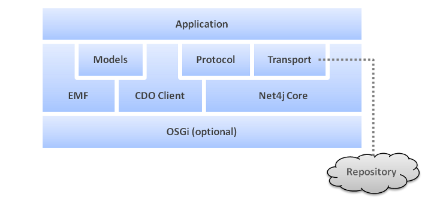

Understanding the Architecture of a Client Application


Understanding the Architecture of a Client Application |
|
The architecture of a CDO application is characterized by its mandatory dependency on EMF, the Eclipse Modeling
Framework. Most of the time an application interacts with the object graph of the model through standard EMF APIs
because CDO model graph objects are EObjects. While CDO's basic functionality integrates nicely and
transparently with EMF's extension mechansims some of the more advanced functions may require to add direct
dependendcies on CDO to your application code.
The following diagram illustrates the major building blocks of a CDO application:

All components of CDO are implemented as OSGi bundles. The core components of
both clients and servers do not require OSGi to actually run to be functional, they can perfectly be operated
stand-alone. If OSGi is running the setup and configuration of some CDO facilities is a little simpler than in
stand-alone mode because the needed factories get automatically registered with the central
wiring container.
CDO utilizes an operations and maintenance framework to abstract common platform services such
as logging, tracing, monitoring and configuration. Without the need to depend on additional external libraries these services integrate seamlessly
with OSGi, if available at runtime, or emulate similar functionality if running stand-alone.
The Eclipse Modeling Framework is a modeling framework and code generation facility for building tools and other applications based on a structured data model. From a model specification described in XMI, EMF provides tools and runtime support to produce a set of Java classes for the model, along with a set of adapter classes that enable viewing and command-based editing of the model, and a basic editor.
The CDO client enables an application to open one or more sessions. Each session represents
a connection to a repository and provides a broad API to interact with it. A session does not
provide direct access to model instances; views or transactions are needed
to navigate or modify the model instance graph.
A session consists of several generic (network and storage independent) components, such as:
All communication aspects (the sending/receiving of signals to/from a network system) are fully abstracted
through the service provider interface (SPI) CDOSessionProtocol. Concrete implementations are fully separated
and can be plugged into the core as described in Protocol.
See Also:
The Net4j Signalling Platform is an extensible client/server communications framework. Net4j eases the
development of fast and maintainable application protocols that are independent of the
physical transport medium. Transport protocols are pluggable and Net4j ships with support for
TCP, SSL, HTTP and JVM
(in-process) transport. The core of Net4j is a fast, asynchronous and non-blocking buffer
multiplexing kernel, based on OSGi but also executable stand-alone.
See Also:
The models, usually in the form of interfaces that are generated by EMF, represent the business knowledge in an application. They define the structure (and, mostly irrelevant for CDO, the behaviour) of the business entities and they're used by the generic CDO client to manage, e.g., load, commit, query, the business data.
CDO can transparently support scalable models such that arbitrary, single objects are loaded
on demand and automatically unloaded (garbage collected) when they're no longer needed. For these sophisticated
features to work properly and efficiently the models have to be re-generated with slightly modified GenModel properties.
The CDO SDK comes with a convenient migrator tool for existing GenModels and an importer tool for new GenModels.
See Also:
A concrete communications adapter, a CDOSessionProtocol implementation that operates inside the
CDO client. The only session protocol implementation that currently ships with CDO is based on
Net4j Core.
A concrete transport adapter, an IConnector implementation that operates on top of the
Net4j core. Net4j currently ships with IJVMConnector, ITCPConnector
(optionally with SSL support) and IHTTPConnector.
The server must be deployed and configured with the matching transport.